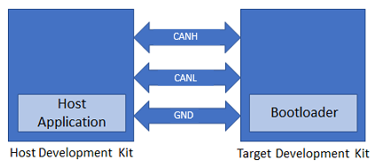
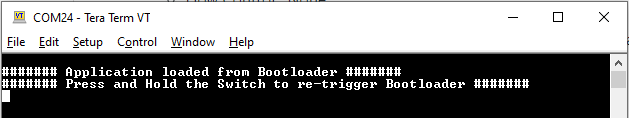
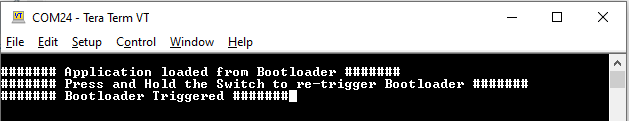

1.1.9 SAM E70 Xplained Ultra Evaluation Kit: Building and Running the CAN Bootloader applications
Downloading and building the application
To clone or download this application from Github,go to the main page of this repository and then click Clone button to clone this repo or download as zip file. This content can also be download using content manager by following these instructions
Path of the application within the repository is apps/can_bootloader/
To build the application, refer to the following table and open the project using its IDE.
Bootloader Application
| Project Name | Description |
|---|---|
| bootloader/firmware/sam_e70_xult.X | MPLABX Project for SAM E70 Xplained Ultra Evaluation Kit |
Test Application
| Project Name | Description |
|---|---|
| test_app/firmware/sam_e70_xult.X | MPLABX Project for SAM E70 Xplained Ultra Evaluation Kit |
Setting up SAM E70 Xplained Ultra Evaluation Kit
SAM E70 Xplained Ultra Evaluation Kit is used for both Host Development kit and Target Development kit
Connect the CANL on CAN Header (J804) of the Host development kit to the CANL on CAN Header (J804) of the Target development kit
Connect the CANH on CAN Header (J804) of the Host development kit to the CANH on CAN Header (J804) of the Target development kit
Connect a ground wire between the Host development kit and Target development kit
Connect the Debug USB port on the Host development kit to the computer using a micro USB cable
Connect the Debug USB port on the Target development kit to the computer using a micro USB cable
Building and Configuring CAN Host Applications
Using CAN NVM Host application to send the application binary to Target development kit
If the NVM Host Development Kit being used is other than SAM E70 Xplained Ultra Evaluation Kit then follow the steps mentioned in Configuring NVM Host application project
Open the NVM host application project host_app_nvm/firmware/sam_e70_xult.X in the IDE
If a NVM host application project of different development kit is used then open that project in the IDE
Build and program the NVM host application using the IDE on to the Host development kit
The prebuilt test application image available under host_app_nvm/firmware/src/test_app_images/image_pattern_hex_sam_e70_xult.h will be programmed on to the Target development kit with default host_app_nvm project configuration
Jump to Running The Application
MCAN Message RAM configuration
Allocate MCAN Message RAM configuration in contiguous non-cacheable buffer in the NVM host application. For example, static uint8_t CACHE_ALIGN attribute((space(data), section (".ram_nocache"))) mcan1MessageRAM;
Add non-cacheable section "ram_nocache" in the Custom linker script apps/can_bootloader/host_app_nvm/firmware/src/config/sam_e70_xult/ATSAME70Q21B.ld
Please refer How to Create Non-Cacheable Memory Region on CortexM7 (SAM S70/ E70/ V70/ V71) MCUs Using MPLAB Harmony v3 to create a non-cacheable memory region.
Running the Application
Open the bootloader project bootloader/firmware/sam_e70_xult.X in the IDE
Build and program the application using the IDE on to the Target development kit
LED1 will be turned-on to indicate that bootloader code is running on the target
LED1 will also turn on when the bootloader does not find a valid application; i.e. the first word of the application (stack pointer), contains 0xFFFFFFFF
If the test application is being programmed, Open the Terminal application (Ex.:Tera Term) on the computer and configure the serial port settings for Target Development kit as follows:
Baud : 115200
Data : 8 Bits
Parity : None
Stop : 1 Bit
Flow Control : None
Press the Switch SW0 on the Host development kit to trigger programming of the application binary
Once the programming is complete,
LED1 on the Host development kit will be turned on indicating success
The target development kit will be reset. Upon re-start, the boot-loader will jump to the user application
If the test application is programmed then LED1 should start blinking and you should see below output on the Target development kit console

Press and hold the Switch SW0 to trigger Bootloader from test application and you should see below output
Press Reset button on the Host development kit to reprogram the application binary
Repeat Steps 4-5 once
This step is to verify that bootloader is running after triggering bootloader from test application in Step 6
Additional Steps (Optional)
Using CAN NVM Host application
To bootload any application other than host_app_nvm/firmware/src/test_app_images/image_pattern_hex_sam_e70_xult.h refer to Application Configurations
Once the application is configured, Refer to Configuring NVM Host application project for setting up the host_app_nvm project
Once done repeat the applicable steps mentioned in Running The Application